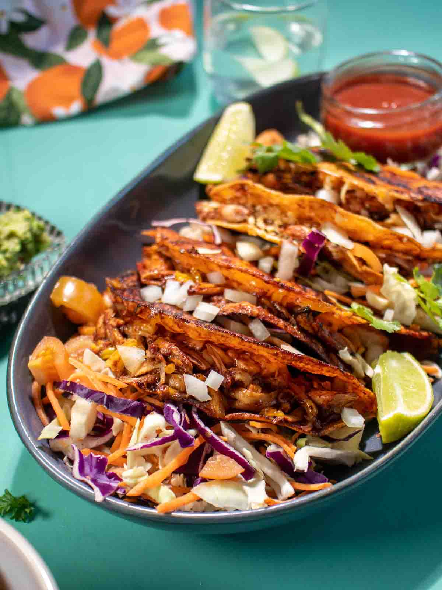

Oyster Mushroom Birria Tacos

Description:
White corn tortillas filled with shredded meaty oyster mushrooms and gooey cheese, served alongside a rich plant-based consume
Ingrediants:
2 tbsp Olive Oil
14 oz Oyster Mushrooms
½ ea White Onion sliced
½ ea White Onion sliced
2 ea Guajillo Chili Pepper
2 clove Garlic(minced)
½ cup Tomato Puree (or two Roma Tomatoes diced)
1 tbsp Pure Maple Syrup
¼ tsp Ground All Spice
½ tsp Ground Cumin
¼ tsp Ground Cinnamon
½ tsp Dried Oregano
½ tsp Dried Marjoram
½ tsp Salt
1 cup Vegetable Stock (low sodium or unsalted)
6 Corn Tortillas
1 Cup Grated Cheese
1 Lime
Fresh Cilantro
Steps:
- Cut the Mexican dried chilies stems off and open and then remove the seeds.
Tear them into smaller pieces by hand.
- Start shredding oyster mushrooms by using your hands.
- Heat the frying pan on medium-low heat with a tablespoon of oil,
slightly fried the chili peppers for 2 minutes to bring out the fragrance.
Then add sliced white onion, garlic, maple syrup and spices( ground all spice,
ground cumin, ground cinnamon, dried oregano, dried marjoram), cook until onions
become transparent. Pour in the vegetable stock, let it simmer for 2 minutes.
- Transfer everything in the frying pan into the blender. Blend at high speed
until the mixture becomes a smooth puree. Preserve one cup of Birria Consomé
for brushing tortillas and dipping for later use. Set aside.
- Heat the frying pan on high heat with one tablespoon of oil, we gonna sauté the
oyster mushrooms until golden brown color. ( a little bit over-cooked, as we want
the chewy texture from cooked mushrooms). Add the birria sauce to the mushrooms,
turn the heat to low, constantly stir and let it simmer for 2 minutes.
- Heat up another pan on medium heat with oil. Place corn tortillas in the pan
and brush them with our previously saved birria sauce. Flip and brush the other side.
(If you like crispy taco, you do need more cooking oil to fry the tortillas. If not enough oil, they won't get crispy).
- Place around a half cup of oyster mushroom mixture on each tortilla, and add a spoonful of vegan cheese on the top of the mixture.
- Fold them into halves like tacos. Press the vegan birria tacos with a spatula
and cook until the bottom of the tortillas are lightly browned and crispy.
Flip them over so they crisp on both sides and the cheese is melted and gooey in the middle.
Repeat the process until finished. Garnish with cilantro and lime wedges. Serve immediately when hot.